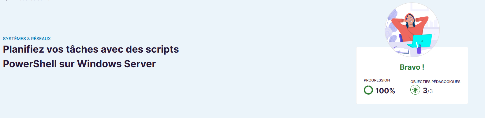
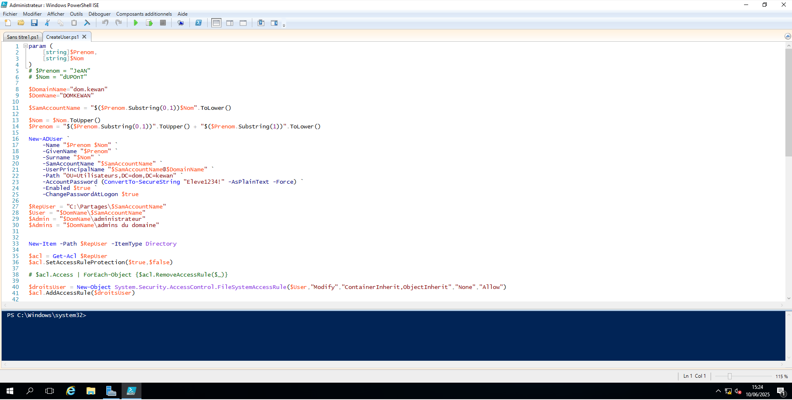

📘 Présentation
Cette formation explique comment centraliser la gestion des utilisateurs et des ressources via Active Directory, tout en assurant la sécurité des accès et des données dans un environnement Windows.
Plateforme : 🎓 OpenClassRooms - Planifiez vos tâches avec des scripts PowerShell sur Windows Server
Lien : Voir la formation
🎯 Objectifs de la formation
Cette formation enseigne l'automatisation des tâches administratives à l'aide de scripts PowerShell, tout en découvrant la planification de ces scripts avec le Planificateur de tâches Windows.
❓ Pourquoi cette formation ?
Dans le cadre de ma spécialisation en systèmes Windows, j’ai suivi cette formation pour améliorer ma capacité à automatiser et sécuriser des processus critiques en entreprise à l’aide de scripts professionnels et robustes.
🛠️ Outils et environnement
- Plateforme : OpenClassrooms
- Outils : PowerShell, Planificateur de tâches Windows
- Environnement : VM locale ou serveur distant
- Scripts, fonctions, gestion d'erreur, logs
📘 Contenu abordé
- Introduction à PowerShell et ses commandes
- Écriture de scripts PowerShell simples et avancés
- Utilisation du Planificateur de tâches Windows
- Structure des scripts : fonctions, paramètres, gestion d'erreurs
- Bonne pratiques pour la maintenance, sécurité et documentation
🧠 Compétences développées
- Écrire et structurer des scripts PowerShell professionnels
- Automatiser les tâches systèmes sur Windows Server
- Planifier l’exécution automatique de scripts
- Gérer les erreurs et consigner les actions dans des logs
🖼️ Notions illustrées
📜 Qu'est-ce que PowerShell ?
PowerShell est un langage de script puissant intégré à Windows, basé sur .NET. Il permet de contrôler le système, d’automatiser des tâches et d’administrer des serveurs à distance.
⚙️ Le Planificateur de tâches
Le Planificateur de tâches permet de déclencher l’exécution d’un script selon un planning, un événement, ou une condition précise (ex : au démarrage du PC).

📂 Structure d’un script professionnel
Un bon script inclut des fonctions réutilisables, des paramètres bien définis, une gestion de logs, et des commentaires clairs.
🧾 Conclusion
Cette formation m’a permis de structurer mes connaissances PowerShell, d’écrire des scripts puissants, et de les exécuter automatiquement. C’est une base solide pour des tâches avancées en administration Windows.